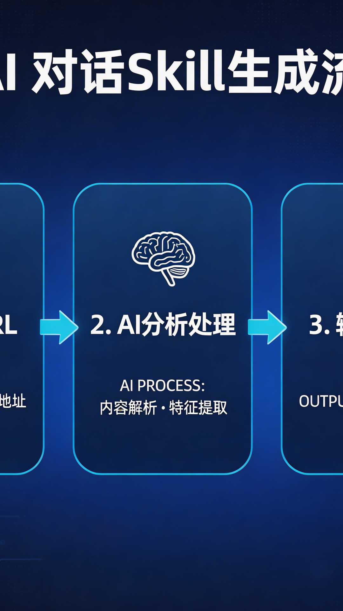
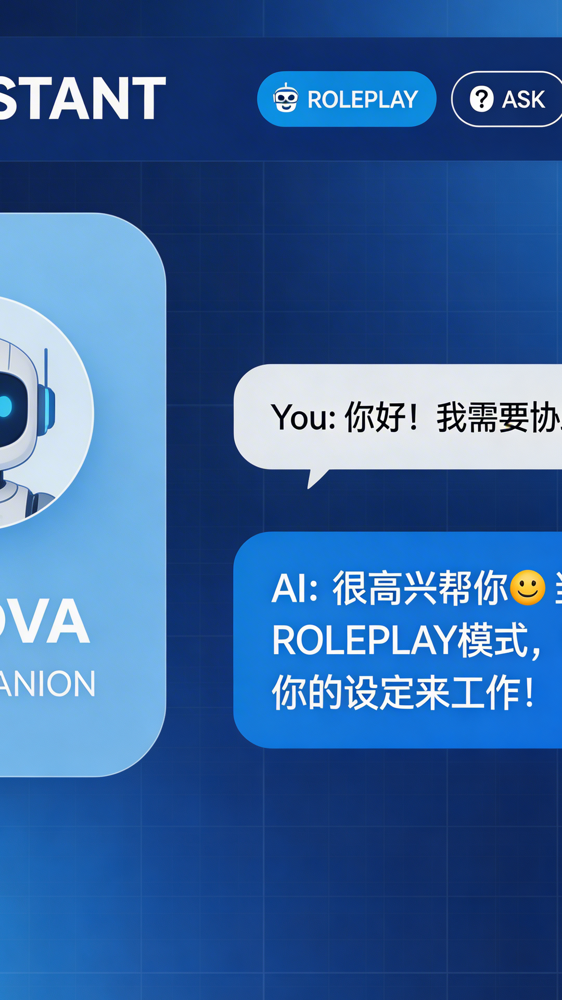
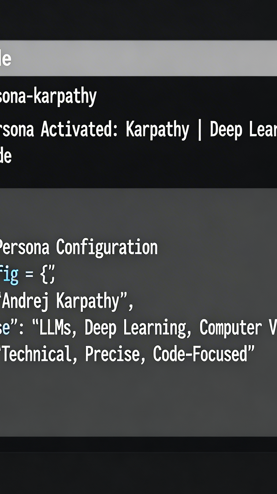

加载中...
四大核心能力，让你轻松创建和管理博主人格 AI
先从一个 URL 创建 persona，再给已有 persona attach 新平台账号，旧语料不会被覆盖，持续积累。
每个 persona 都保存在标准目录结构中，可追踪、可复用、便于管理。
不再依赖三个独立 slash commands，统一入口，一个 Skill 全搞定。
skill build 自动生成两层文件，Claude Code 直接加载。
三步走，轻松创建你的第一个博主人格 AI
输入任意博主的社交媒体链接（Twitter/X、小红书等）
自动抓取内容，分析语气、风格、观点，生成 persona
编译成 Claude Skill，用他的方式和你聊天！
5 分钟快速搭建环境，开始创建你的第一个 persona
# 克隆仓库git clone https://github.com/YourongZhou/chat_with_mecd chat_with_me# 创建 conda 环境并安装conda create -y -n chat python=3.11conda run -n chat python -m pip install -e .[dev]
# Twitter / Xconda run -n chat python -m social_persona_skill.cli \ --runtime-root .runtime backend bootstrap xconda run -n chat python -m social_persona_skill.cli \ --runtime-root .runtime backend login x# 小红书conda run -n chat python -m social_persona_skill.cli \ --runtime-root .runtime backend bootstrap xiaohongshu
# 创建 personaconda run -n chat python -m social_persona_skill.cli \ --runtime-root .runtime \ persona create https://x.com/karpathy# 编译成 Claude Skillconda run -n chat python -m social_persona_skill.cli \ --runtime-root .runtime \ --storage-dir personas \ skill build --person-id <id>
无限可能，让 AI 人格为你服务
博主任天堂断更？自己做一个继续对话！
想学某个博主的写作风格？让 AI 帮你分析并模仿！
用竞品博主的风格生成内容参考？
和已故名人、虚拟角色"对话"？
点击图片查看详情，支持缩放、旋转、幻灯片播放



查看完整项目文档、视频脚本和公众号文章